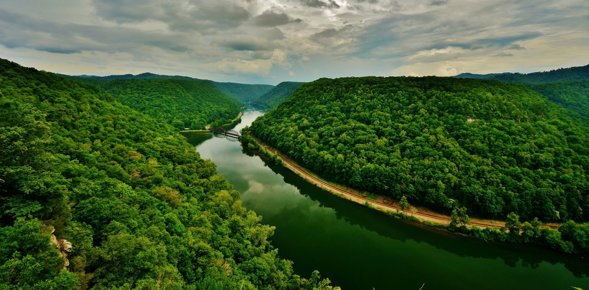
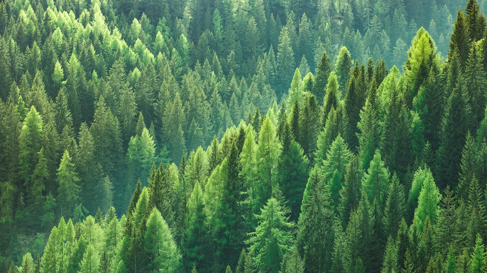

ПЕРЕСВЕТ


Отзывы

Татьяна
Отличные выходные!! Ай как рай!! Очень понравилось!!
Екатерина
Замечательное путешествие-прогулка на виадуки в Октябрьском районе (п.Бартым, п. Сарс) с дружной и веселой компанией 27 февраля 2021г. случилась благодаря руководителю туристического клуба Пересвет Андрею Баринову!!!! Море эмоций и снега по колено, красивые виды и фотографии, теплая атмосфера!!!
Людмила
Ну оооооень оооочень круТо!!👍💥
